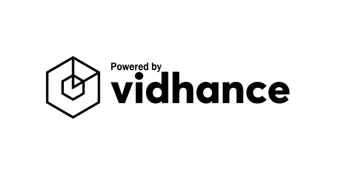
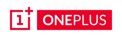
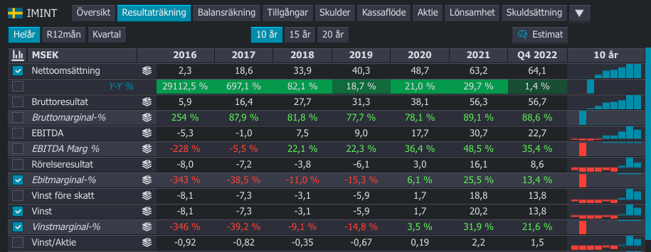
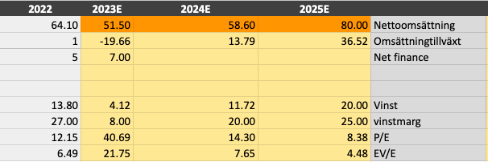
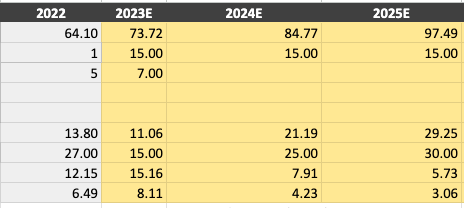

Imint: En ledande aktör inom videoanalys
Tänk på att investeringar alltid innebär ett risktagande. Gör alltid din egen analys innan eventuell handel. Jag tar inget ansvar för vad ni väljer att göra med denna information.
Efter Q2 2023 sammanfattar jag att caset i imint ser ut att vara längre bort än vad jag trodde tidigare. Sämre konjunktur, bortfall av nyckelkund, signifikant svagare kassaflöde och ingen momentum i professional leder till jag att anser inte att företaget är värt att äga. Risken för en ökenvardring innan lönsamhet igen anser jag är stor.
{kind=link}
Bakgrund och grundare
Imint grundades 2007 av Jakob Sandström (CTO) och Harald Klomp (VD) som ett spin-off från Uppsala universitet. Bolaget fokuserade ursprungligen på att leverera videoanalys och optimering till obemannade luftfarkoster (UAV) för försvars- och säkerhetsindustrin.
2012 bytte Imint ledning och utsåg Andreas Lifvendahl till ny VD och Simon Mika till ny CTO. Under den nya ledningen breddade Imint sitt fokus till att även omfatta civila användningsområden för UAV och andra marknader.

2014 lanserade Imint Vidhance Mobile, en mjukvaruplattform som erbjuder avancerad videostabilisering, brusreducering, autofokus och andra funktioner för smartphonetillverkare.
2015 vann Imint Young Bulls Award två år i rad för sin innovativa teknik. Samma år genomförde bolaget en kraftigt övertecknad nyemission och noterades på Aktietorget (numera Spotlight Stock Market).
Sedan dess har Imint fortsatt att utveckla och lansera nya produkter och funktioner inom Vidhance-plattformen, samt expanderat sin kundbas till flera ledande smartphonetillverkare i Asien och Europa. Genom att använda Imints teknik kan kunderna erbjuda högkvalitativa videoinspelningar och därigenom skapa ett högre värde för sina kunder.
Unit economics
Enheten för Imints affärsmodell är försäljning av licenser för sin mjukvarulösning. Företaget tar betalt per enhet som deras teknik används i. Detta ger en hög bruttomarginal, eftersom marginalen på licensförsäljning är hög och Imint inte har några produktionskostnader för varje såld enhet.
Ett möjligt problem med Imints affärsmodell är att den är beroende av en tredje parts hårdvara för att deras mjukvara ska fungera. Imints teknik är inte självständigt användbar utan kräver att den integreras med kunders hårdvaruprodukter, vilket gör att Imint är beroende av att deras teknik är kompatibel med olika kunders produkter. Vidhance är en plattformsoberoende mjukvara som stöder Android, Windows och Linux OS med version 3.0.

Imints kunder är främst smartphonetillverkare i Asien och Europa som vill differentiera sig på en konkurrensutsatt marknad genom att erbjuda högkvalitativa videoegenskaper till sina användare. Bland Imints kunder finns bland annat Xiaomi, Vivo, Oppo, OnePlus, Huawei, Honor, Motorola, Wiko och Bytedance.
En annan potentiell utmaning är att Imint konkurrerar mot större och etablerade företag som har större resurser och mer kundrelationer. Imint måste fortsätta att differentiera sig från konkurrenterna och stärka sina relationer med kunderna för att lyckas på marknaden.
Konkurrenter och konkurrensfördelar
Imints huvudsakliga konkurrenter är andra företag som också erbjuder mjukvarulösningar för videostabilisering och bildförbättring, såsom Adobe, CyberLink och GoPro. Dessa konkurrenter erbjuder också avancerade videoredigeringsverktyg och andra programvarulösningar för bild- och videobearbetning.
En konkurrensfördel som Imint har gentemot sina konkurrenter är deras fokus på mobiltelefonmarknaden, där deras teknik är integrerad i några av de största varumärkena i branschen. Imint har också fokuserat på att utveckla sin teknik för att vara mer energieffektiv och kräva mindre hårdvaruresurser, vilket gör att den kan användas i mindre enheter som drönare och actionkameror.
Imint har inte en tydlig “moat” som skyddar deras affärsmodell, men deras teknik är svår att kopiera eftersom den är patenterad och kräver avancerade algoritmer och tekniska kunnande för att utvecklas och implementeras. Imint har också ett team av erfarna ingenjörer som har varit avgörande för att utveckla och förbättra deras teknik.
Imints bruttomarginal på 80% är hög och kan anses hållbar på kort sikt, men på lång sikt kan den påverkas av ökad konkurrens och prispress. Det är viktigt för Imint att fortsätta att förbättra sin teknik och differentiera sig från konkurrenterna för att upprätthålla lönsamhet och hållbarhet på lång sikt.
Ägare, Styrelse & Ledning
Peter Ekerling - Styrelseordförande sedan maj 2020. Aktier: 211 150
Martin Thunman - Styrelseledamot sedan maj 2018. Aktier: 0
Jonas Fridh - Styrelseledamot sedan maj 2022. Aktier: 250 000
Anders Ingeström - Styrelseledamot sedan maj 2019. Aktier: 6 700
Öjvind Norberg - Styrelseledamot sedan maj 2020. Avgående.
Andreas Lifvendahl - VD och grundare. Aktier: 158 000
Johan Svensson - CTO och grundare. Aktier: 2200
Pär Håkansson - CFO. Aktier: 0
Daniel Jörgenstam - COO. Aktier: 0
Valuation
Värderingen baseras på att Imint har en nettokassa på 78 miljoner. EV är då 90 miljoner. Imint har nya satsningar på gång inom segmentet för professional. Det finns en ganska stor osäkerhet kring hur satsningarna kommer att gå, därför användaer jag mig av en scenario analys. Basen blir den tidigare historiska värderingen.

Imint har ett finansiellt mål att marginalerna ska vara 35 procent consumer och professional segment. Nettoomsättning för Professional uppgick till 414 tkr. Nettoomsättning för Consumer uppgick till 11 802 tkr. Vi kommer sedan att utgå ifrån att consumer kommer att vara statisk och professional kommer att växa till 12 miljoner i omsättning i slutet av 2025.
Neutralt scenario
| År | Kvartal | Omsättning professional | Omsättning consumer | Omsättning |
|---|---|---|---|---|
| 2022 | 4 | 414 | 12000 | 12414 |
| 2023 | 1 | 546.48 | 12000 | 12546.48 |
| 2023 | 2 | 721.3536 | 12000 | 12721.3536 |
| 2023 | 3 | 952.186752 | 12000 | 12952.18675 |
| 2023 | 4 | 1256.886513 | 12000 | 13256.88651 |
| 2024 | 1 | 1659.090197 | 12000 | 13659.0902 |
| 2024 | 2 | 2189.99906 | 12000 | 14189.99906 |
| 2024 | 3 | 2890.798759 | 12000 | 14890.79876 |
| 2024 | 4 | 3815.854361 | 12000 | 15815.85436 |
| 2025 | 1 | 5036.927757 | 12000 | 17036.92776 |
| 2025 | 2 | 6648.744639 | 12000 | 18648.74464 |
| 2025 | 3 | 8776.342924 | 12000 | 20776.34292 |
| 2025 | 4 | 11584.77266 | 12000 | 23584.77266 |
I ett neutralt scenario räknar jag med att Q4 2022 är grunden för hela 2023, då Q4 2022 brukar vara ett starkt kvartal för IMINT. Jag räknar med att consumer kommer fortsatt att vara svagt, med 12 miljoner i intäkter per kvartal. 2023 tappar omsättning på till 51.5 miljoner. Omsättningen rör sig mot 80 miljoner.

Jag räknar med mindre vinst i samband med att det kostar att få igång det nya segmentet professional. Detta scenario är negativt på kort sikt men bättre på längre sikt.
Bullish
I ett positivt scenario kan man räkna med att consumer inte kommer att tappa något under 2023. Resultatet blir detsamma som 2022 och professional fortsätter att mala på med fina tillväxt siffror. 15 procent tillväxt framåt, vilket är lite lägre än den historiska tillväxten mellan 2018 och 2022 på 17 procent. Marginalerna blir 15, 20 och 25 procent för 2023, 2024 och 2025 respektive.

Nettoomsättning, omsättningtillväxt, net finance, vinst, vinstmarginal, P/E, EV/E. I detta scenario är imint väldigt billigt, företaget bör handlas runt 3x-5x upp från dagens värdering.
Bearish
I ett bearish scenario så tror vi att värden är så mörkt som den ser ut att vara i Q4 2022. Kostnaderna i kvartalet var 18 mkr, intäkterna var 11,5 miljoner. Vi drar ut linjen ner i avgrunden och ser att vi sumpar 5,5 miljoner per kvartal. -22 miljoner för 2023.

Här kommer scenariot snarare bli ett net cash scenario. där marknadsvärdet konvergerar till runt 7 spänn aktien, sedan är det billigare att köpa hela bolaget och likvidera bolaget. Bra, det är det värsta som kan hända, såfall förlorar vi runt 60 procent av våra investerade pengar.
Sammanfattning
Sammanfattningsvis har Imint utvecklat en avancerad teknik för videostabilisering och bildförbättring som används av kunder inom mobiltelefon-, actionkamera- och drönarindustrin. Företagets affärsmodell är baserad på försäljning av licenser för deras mjukvarulösning, vilket ger en hög bruttomarginal. Imints konkurrensfördelar inkluderar deras fokus på mobiltelefonmarknaden och deras tekniska kunnande. På lång sikt kan ökad konkurrens och teknisk utveckling påverka företagets marginaler och hållbarhet.
Källor
Lägg till
https://www.uu.se/nyheter/artikel/?id=20410&typ=artikel&lang=sv